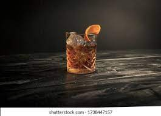

The Old Fashioned

The Last Drink You'll Ever Need
This is a real recipe. I don't know how you found this deep in the bowels of my GitHub repositories but this is my Magnus Opum of drinks. I created this masterpiece of a libation in search of a drink I would be proud to call my own. With some inspiration from The Edison bar in Orlando and plenty of trial and error, I present my namesake (which, obviously you do not know..hopefully) Old Fashioned
Ingredients
- 2oz Basil Haydens Bourbon
- .25oz Mr. Black Coffee liqueur
- .25-.5oz demarara syrup
- 5 dashes Fees Orange bitters
- 5 dashes Aztec chocolate bitters
- Luxardo cherries
- Peel of an orange
Directions
- Add a large ice rock, sphere, or cube to a double rocks glass
- Add in all liquid Ingredients
- Stir for 20 seconds or until the glass is cold to the touch
- Garnish with cherries and orange peel
- (optional)Smoke with bourbon wood